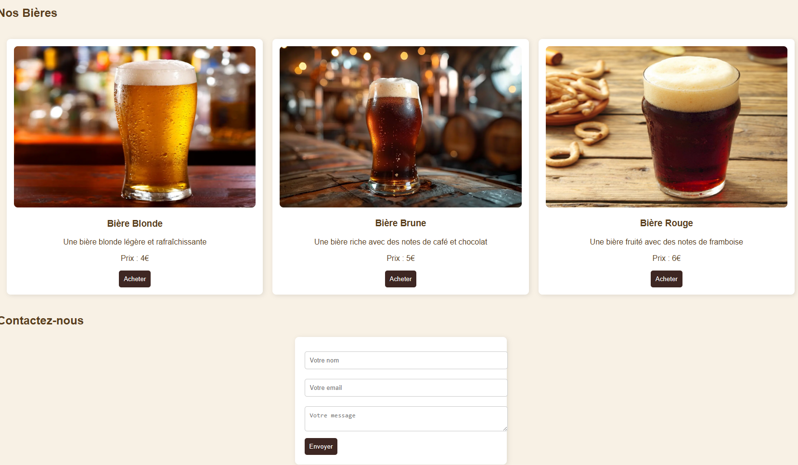
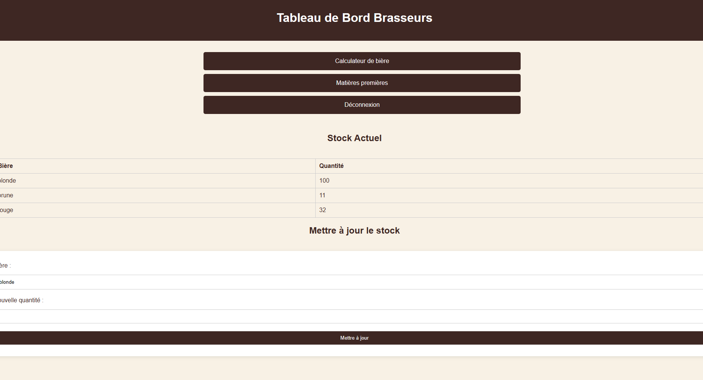

Design & Branding
Une identité visuelle complète pour une brasserie artisanale célébrant le terroir local.
BTS – Brasserie Terroir et Saveur est un projet complet autour d'une brasserie artisanale fictive : création de l'identité de marque (univers visuel, charte) et réalisation d'un site web fonctionnel (Ethur) permettant de présenter la production, les gammes de bières et de gérer des interactions avec les utilisateurs.
"Une brasserie qui raconte une histoire à travers chaque détail — du logo jusqu'au site web de réservation de bières."
Comment créer une identité visuelle qui évoque l'authenticité artisanale et la richesse du terroir, tout en restant moderne et adaptée à un site dynamique développé en PHP ? Il fallait trouver un équilibre entre cachet traditionnel (codes graphiques de la brasserie) et expérience utilisateur actuelle (navigation, lisibilité, parcours jusqu'à la réservation).
Le site Ethur présente la brasserie à travers plusieurs sections : bannière d'accueil, présentation de la brasserie, mise en avant de la production, catalogue de bières (blonde, brune, rouge) et formulaires de contact / connexion. L'utilisateur peut découvrir les gammes, visualiser la chaîne de production et accéder aux formulaires pour entrer en contact ou se connecter à l'espace dédié.


Côté design, j'ai conçu le logo, la charte graphique complète et les maquettes du site. Côté technique, j'ai intégré ces éléments dans une application web en PHP avec gestion de la navigation, des sections de contenu et des formulaires de contact / connexion.
Ce projet m'a permis de relier design d'identité et développement web concret. J'ai renforcé mes compétences en création de charte graphique, en maquettage Figma et en intégration, mais aussi en structuration d'un site PHP accueillant plusieurs pages (accueil, production, bières, contact, connexion) tout en restant fidèle à l'univers de la brasserie.
Intéressé par ce type de projet ?